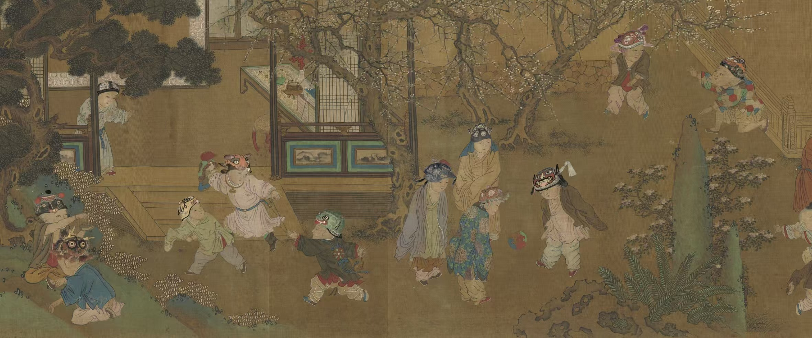

01

历史巡展
社交文化的四个场景
Milan 2025
米兰 2025 以社交文化为主线，通过 Banquet / Salon / Merenda / Opera 四个社交场景，呈现中国非遗与当代设计在跨文化交流中的表达。
02
相识 · 雅集Acquaintance · Salon
03
相知 · 茶会Empathy · Merenda
04
相望 · 戏剧Longing · Opera
这四个单元只属于 Milan 2025 历史展览，用于解释当年的策展叙事；当前主站仍以家具、器物、服饰与珠宝、观赏品作为藏品浏览的一层功能分类。